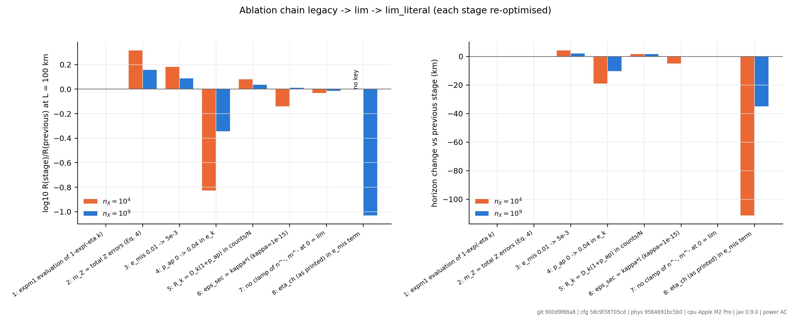
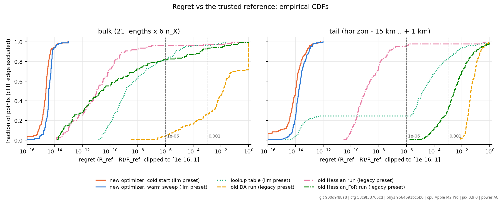
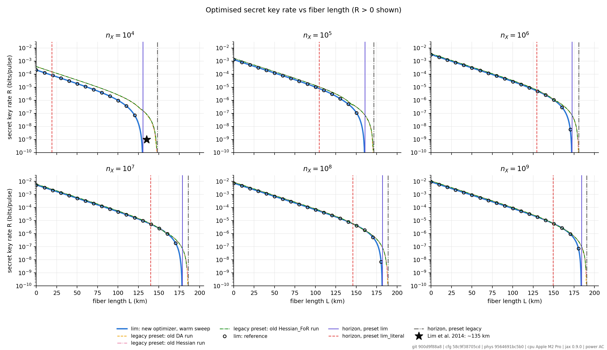
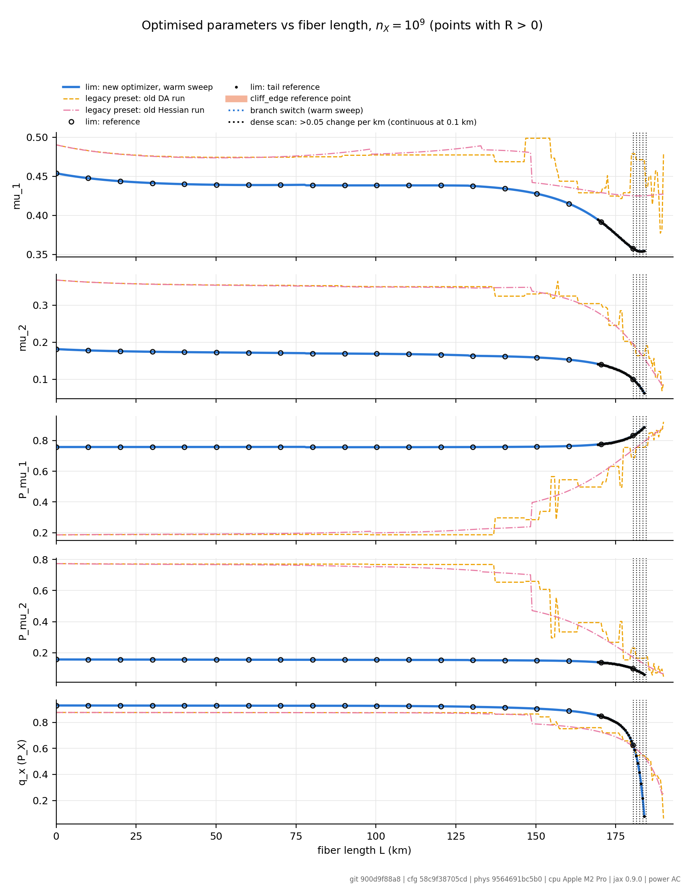
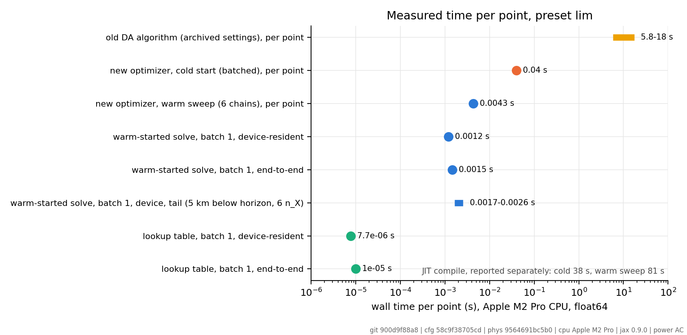
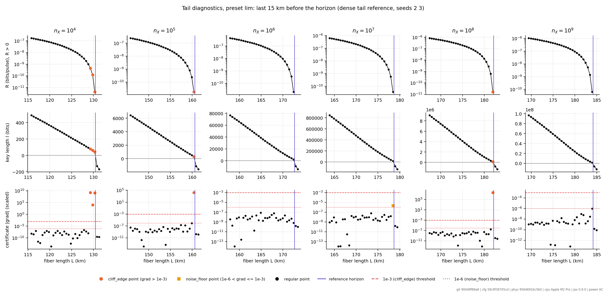
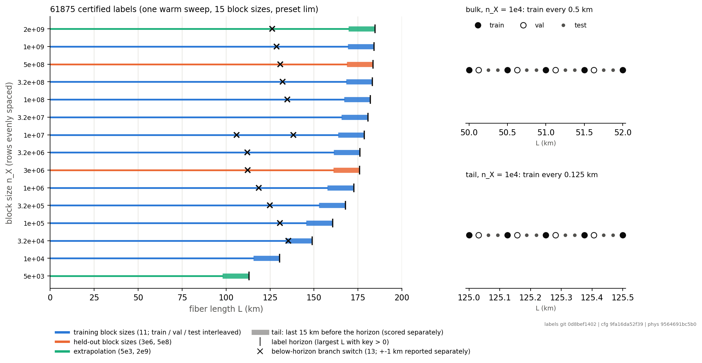

Optimal parameters for finite-key decoy-state BB84:
a verified classical baseline and a quantum-circuit surrogate
Shek Lun Leung
Introduction and motivation
The problem: five parameters per operating point
- Decoy-state BB84 with finite-key security (Lim, Curty, Walenta, Xu, Zbinden, PRA 89, 022307, 2014).
- Alice chooses intensities μ1, μ2 (μ3 = 2·10−4 fixed), their probabilities Pμ1, Pμ2, and the basis probability qx.
- The secret key rate R = ℓ/N depends on them strongly. The best choice depends on the fiber length L and the block size nX.
- Re-optimising whenever the channel changes is the motivation for fast surrogates: a model that predicts the optimal parameters directly.
What is optimised
| parameter | constraint (holds by construction) |
|---|---|
| μ1 | μ2 + μ3 < μ1 < 0.9 |
| μ2 | μ3 < μ2 < 0.5 |
| Pμ1, Pμ2 | > 0, with Pμ3 = 1 − Pμ1 − Pμ2 > 0 |
| qx | 0 < qx < 1 |
Inputs: L ∈ [0, 200] km, nX ∈ [104, 109]. Physics preset lim
(Lim et al. 2014, with ηsys in the misalignment term; see PHYSICS_DIFF.md).
Why a quantum circuit, and what we will (not) claim
Question
Can a small parameterised quantum circuit (PQC) learn x = (L, log nX) ↦ optimal parameters p*(x) as well as classical surrogates of the same size, and is it useful under a fixed criterion?
Usefulness criterion (fixed before training)
- (a) reach the warm exact solver's regret class at lower latency, or
- (b) beat the lookup table's regret at comparable latency.
- Plus the hybrid: surrogate prediction + k = 1, 2, 3 Newton steps.
Ground rules
- Preregistered (protocol committed before any training); changes only as dated amendments.
- Every reported key rate is recomputed by the exact float64 model at the predicted parameters.
- Classical comparators of matched parameter count; equal tuning budget.
- No quantum-advantage claim. Circuits are simulated classically. A negative or parity result is a valid outcome.
Previous dataset and results
2025 MSc thesis → 2026 results report → audit and verified rework (final report, Nov 2026)
What the earlier pipeline produced, and what the audit found
Earlier dataset and model
- 2025 thesis: 6,000 dual-annealing (DA) labels, NN with 4 inputs → 5 outputs; reported "±6 % SKR error" and "270×".
- 2026 report: labels from a regularised Hessian run; headline "5.9·106× speed-up", "129× stability", "20 km+ reach".
Audit findings
- Physics defect: mZ used X-basis detections instead of Z-basis errors (Eq. 4), plus four further departures from the paper.
- Labels were not optimal (next slides).
- Headline numbers not reproducible or ill-defined → withdrawn (CLAIMS.md).
Effect of the corrections (nX = 104)
| stage | R(100 km) | horizon km |
|---|---|---|
| earlier physics | 2.60e-6 | 148.17 |
| mZ defect fixed | 5.39e-6 | 148.17 |
| + emis, afterpulsing, εsec = κℓ | 1.07e-6 | 130.44 |
corrected model (lim) | 9.91e-7 | 130.44 |
The earlier physics overstated the nX = 104 reach by 17.7 km.
The corrected model reproduces the paper to within 8 %
| quantity | paper | lim |
|---|---|---|
| R(0, 109) | ~1e-2 | 9.20e-3 (−8 %) |
| R(100,109)/R(100,107) | ~1.75 | 1.79 (+2 %) |
| horizon, nX = 104 | ~135 km | 130.44 (−3 %) |
- No constant tuned to these targets. The ηsys vs printed ηch choice was made against them.
- Independent float64/Decimal re-implementation agrees on ℓ to ≤ 2·10−13.

New optimizer: at the reference everywhere; earlier labels were not
| method | ≤1e-6, bulk | ≤1e-6, tail |
|---|---|---|
| new optimizer (warm) | 100 % | 100 % |
| lookup table (2 km) | 81.6 % | 24.6 % |
| earlier DA run† | 3.7 % | 0 % |
| earlier Hessian run† | 96.3 % | 95.8 % |
| earlier Hessian_FoR (NN labels)† | 81.7 % | 0 % |
Regret = (Rref − R)/Rref against an independently cross-checked reference.
† scored on the physics they were optimised for (preset legacy).

Optimal key rate and maximum distance

| nX | 104 | 105 | 106 | 107 | 108 | 109 |
|---|---|---|---|---|---|---|
| horizon (km, ℓ > 0) | 130.44 | 160.61 | 172.62 | 178.67 | 182.09 | 184.16 |
Optimal parameters vs distance (nX = 109)

- New optimizer (blue): smooth curves, apart from small branch switches (see update).
- Earlier runs: repeated jumps at 148–157 km (DA 5, Hessian_FoR 5, Hessian 1).
- Parameter values are not comparable across the two physics models; only continuity is.
Measured cost per operating point

- Earlier DA settings: 5.8–17.6 s per point (the 17.6 s point lies beyond the horizon).
- New optimizer, warm start: 1.2 ms device, 1.5 ms end-to-end.
- Lookup table: 7.7 µs / 10.0 µs, at lower accuracy (previous slide).
- New: batch-1 cold solve, first measurement: 29.7 ms median.
Apple M2 Pro, CPU, float64, on AC power. Compile time reported separately.
"cliff_edge" points are converged optima, not discontinuities

- The report flagged 7 reference points (orange) as "cliff_edge": certificate gradient > 10−3.
- Diagnosis: the stored gradient is divided by |R| at the solver's starting point (~10−27), not at the solution (10−12–10−10).
- Relative to R at the solution the gradient is 3·10−13–1.1·10−6: converged.
- Report §4.1 explanation not supported; to be corrected on main. The QML study scores both ways.
Our quantum machine learning implementation
Pipeline: physics and models never share a process
Training data: 61,875 certified labels, split by grid position

| quality gate vs reference | train | val | test | reference pts | held-out nX | extrapolation |
|---|---|---|---|---|---|---|
| 103 + 175 shared points, 0 worse (≥ −9.5e-13) | 4,727 | 4,722 | 9,437 | 263 | 6,708 | 4,724 |
The quantum circuit: data re-uploading, five measured outputs

- Each layer: RX(a·uL), RY(b·v) with trainable input scalings, a trainable Rot, then a CZ ring.
- Repeated L times; measure ⟨Z0⟩…⟨Z4⟩ in one circuit (they commute).
- Grid (qubits × layers): 5×3, 6×3, 8×3, 5×6, 6×6, 8×6 → 75…240 parameters.
- PQC-product: identical, no CZ gates (tests whether entanglement matters).
- RFF ridge: classical regression on frequencies sampled from the trained circuit's spectrum.
Simulated with PennyLane default.qubit, analytic expectations (no shot noise), JAX backprop.
Why 5 qubits and this circuit
- One qubit per output. Five settings → five single-qubit observables ⟨Zi⟩ ∈ [−1, 1]. They commute, so one circuit run gives all five. 5 qubits is the minimum width; 6 and 8 add capacity and are in the tuning grid.
- Feasible by construction. ⟨Zi⟩ maps affinely to ui ∈ (0, 1), and u to (μ1, μ2, Pμ1,
Pμ2, qx) through
reparam.py. No prediction can violate μ1 > μ2 + μ3 or the probability simplex. - Data re-uploading = Fourier model. Encoding the inputs in every layer makes each output a trigonometric series in uL and v. The number of layers sets the number of frequencies; trainable input scalings set which frequencies.
- RX for uL, RY for v: two inputs on different rotation axes; Rot gives a general trainable single-qubit unitary.
- CZ ring: lets the coupled outputs share information. CZ is native on IQM; a ring needs only nearest-neighbour coupling. The product twin (no CZ) isolates the effect of entanglement.
- RFF ridge on the circuit's spectrum: a classical model with the same frequencies. Parity with the PQC would mean the circuit's value is its spectrum.
- Not claimed: a speed or quantum advantage. The test is accuracy per parameter under a fixed protocol.
What we observed while tuning (seed 0, training loss)
| PQC-full | params | train MSE (z) | train s |
|---|---|---|---|
| 5 × 3 | 75 | 1.83e-2 | 49 |
| 6 × 3 | 90 | 1.24e-2 | 109 |
| 8 × 3 | 120 | 1.65e-2 | 685* |
| 5 × 6 | 150 | 5.65e-3 | 97 |
| 6 × 6 | 180 | 5.18e-3 | 267 |
| 8 × 6 | running at the time of writing | ||
* another job overlapped this run. Training loss only; selection uses validation regret (pending).
- Depth helps more than width: 6 layers give 2–3× lower loss than 3 layers; 8 qubits did not beat 6.
- Cost grows steeply with width (statevector simulation): 8 qubits ≈ 6× the step time of 6 qubits.
- A loss of ~5·10−3 corresponds to output errors of a few percent of each range; the pilot mapped 1 % of range to a median regret of 4·10−3. Whether the kill criterion (median bulk regret > 10−2) is met will be decided by certification.
Models, budget and metrics (preregistered)
| model | role |
|---|---|
| PQC-full | quantum circuit under study |
| PQC-product | same circuit, no entanglement |
| NN (tuned / matched) | classical, matched parameter count ±10 % |
| RFF ridge | classical, on the PQC's frequency spectrum |
| lookup 2-D / per-nX | floor to beat (same labels) |
| cold / warm exact solver | references for the hybrid |
6 configurations × 1 seed per family for tuning, 2000 full-batch Adam steps; selected configuration × 5 seeds. Sparse variant: same models on 2 km labels (label efficiency).
Metrics
- Regret of the recomputed R: median, p99, max, % within 10−6…10−2, % no key.
- Scored separately: bulk, tail, reference points, held-out nX, extrapolation, crossover windows.
- Horizon error; parameter error in u-space.
- Hybrid k = 1, 2, 3: regret, iterations, wall time.
- Latency: batch-1 device and end-to-end, batched throughput; for the PQC also shots per prediction.
Pilot: what the Newton steps can do from an approximate prediction
| stand-in prediction: label + 1 % noise in u | k = 0 | k = 1 | k = 2 | k = 3 |
|---|---|---|---|---|
| median regret | 4.1e-3 | 2.0e-5 | 2.0e-9 | 2.8e-15 |
| batch-1 end-to-end (Newton part) | – | 0.90 ms | 1.37 ms | 1.83 ms |
Implication (stated before results): with 2–3 Newton steps even a rough surrogate reaches high accuracy faster than a cold solve, so the hybrid scenarios may separate the surrogates only weakly; the surrogate's own regret (k = 0) is the sharper test.
The quantum results
Training and evaluation running · filled from qml/RESULTS.md at STOP 3
Regret of the predicted parameters (no Newton steps)
results/qml_certify_final_*/regret_cdf_dense.png), and the table:
median / p99 / max regret and % within 10−6 for PQC-full, PQC-product, NN-tuned, NN-matched, RFF ridge, lookup (mean ± sd over 5 seeds).
Kill criterion: PQC-full median bulk regret > 10−2 → negative result.
Held-out block sizes, extrapolation, crossover windows, horizon error
Surrogate + Newton steps, and what each prediction costs
Comparison
From the earlier pipeline to the quantum surrogate
| approach | labels / physics | ≤1e-6 bulk | ≤1e-6 tail | time / point | status |
|---|---|---|---|---|---|
| 2025 thesis NN | DA labels, earlier physics | – | – | – | not reproducible |
| earlier DA run | earlier physics† | 3.7 % | 0 % | 5.8–17.6 s | superseded |
| earlier Hessian_FoR (NN labels) | earlier physics† | 81.7 % | 0 % | – | superseded |
| new optimizer, warm | verified, lim | 100 % | 100 % | 1.5 ms | reference method |
| new optimizer, cold (batch 1) | verified, lim | 100 % | 100 % | 29.7 ms | measured Nov 6 |
| lookup table (2 km nodes) | lim | 81.6 % | 24.6 % | 10 µs | floor |
| lookup / NN / ridge (QML study labels) | lim | pending | pending | pending | running |
| PQC-full (and PQC-product) | lim | pending | pending | pending | running |
| PQC + k Newton steps | lim | pending | pending | pending | running |
† scored on the physics they were optimised for. The QML study's lookup uses 0.5/0.125 km nodes (denser than the report's 2 km table), so the classical floor in the QML comparison is stronger than the 81.6 % / 24.6 % shown here.
Conclusion and future improvement
What is established so far
- A corrected physics model (within 8 % of the paper's stated numbers) and a verified optimizer: 100 % of points within 10−6 of an independently cross-checked reference, bulk and tail.
- The earlier labels and headline claims did not hold; they are withdrawn and documented.
- A preregistered, reproducible QML benchmark: 61,875 certified labels, fixed splits, equal tuning budgets, every R recomputed exactly.
- Two findings on the way: the "cliff_edge" points are converged optima (certificate normalisation), and the optimal parameters switch branch at 13 places below the horizon, not 2.
Next steps
Quantum
- IQM inference demo (fake backend, then hardware) — paused; requires the Qiskit rebuild check (≤ 10−10) and an approved shot / credit budget.
- Shot budget is the practical limit: ~1 % parameter error already gives ~4·10−3 regret; the hybrid is the realistic use.
- Extended inputs (emis, pdc, α), where a lookup table scales poorly.
Classical baseline
- Correct the report's cliff_edge and "two switches" statements on main.
- Generate larger label sets on cloud CPU/GPU.
- Retrain the torch NN per NN_RETRAIN_PLAN.md.
- Remaining open issues (STATUS.md).
Reproducibility and provenance
- Classical results:
python Optimization/run_all.py→ results/MANIFEST.json; numbers via make_numbers.py; figures via make_figures.py (git 900d9f88a8). - QML study:
python qml/run_qml.py --only STEP→ results/MANIFEST_qml.json; every output stamped with git commit, config hash, versions, power state. - Environments:
.venv(JAX 0.9.0, physics) and.venv-qml(PennyLane 0.45.1, JAX 0.10.2; PennyLane fails at runtime with JAX 0.11–0.12). - Slide images: assets/SOURCES.md lists each file's source path and SHA-256.